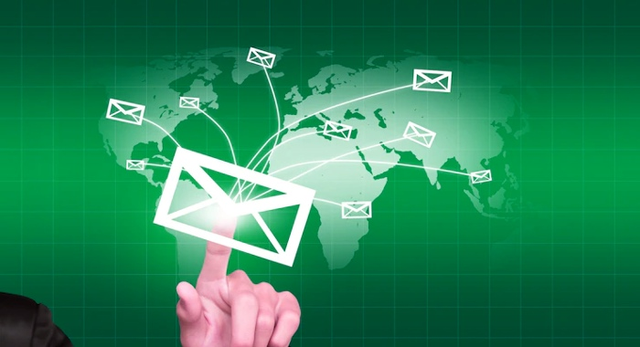
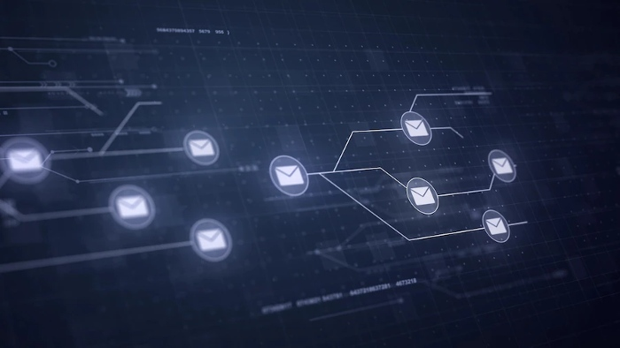

- emails that contain urgent or scary information
- emails purporting to be from colleagues but coming from a different address
- emails whose links look suspicious
How To Stop Phishing Emails
Phishing attacks are on the rise. Phishing is a type of cyber crime and happens when hackers send emails that appear to be from a legitimate source. The goal of a phishing attack is to get you to click on a link, open an attachment, or supply other personal information.
The association must avoid replying to these mysterious phishing emails.
Awareness: Recalling the severity of how prevalent phishing emails are.
Understanding: Understanding how common malware is used to execute phishing attacks can help you identify an attack.
Sender: Carefully examining the probable sender address of a supposed phishing email to detect fraudulent indicators.
Content: Password requests, and urgent emails may also indicate foul play.
Links: In doubt, do not click a potential phishing email; rather, type links into your browser yourself.
Anti-phishing software tools: Your eye alone is not sufficient to be safe. For maximum security, you will need a solution that uses technology to prevent receiving phishing emails.

How do I stop phishing emails?
The initial step for avoiding phishing emails is awareness. With people you work with and online, be sure to be as cautious and vigilant as you would be walking on the street.
Just as if someone had offered something that was too good to be true or you received a call to update your bank password, so too should you keep alert when it comes to online behavior.
Things to look out for to stop phishing emails include:
Finding out how to stop phishing emails involves possessing insight into simply how simple it is to compose phony emails. You'll barely need to consider using the apple.com handle to register domains like apple-overdue-payments.com or co.
These must look legitimate, especially if we are not on the lookout for them. People could even fall for Apple payments@gmail.com, which may sound silly again, but if we are not specifically looking for it, the human eye can just overlook the information. Unfortunately, email frauds can trick you into believing that the email came from a real address and start communicating with you. Therefore, the next time you receive an email from payment@amazon.com , chances are quite high that it's a scam.
How To Spot A Phishing Email
Check your emails for signs of synonymous attacks and be sure to check the sender's address. In order to figure out if an email is a phishing assault or not, start by meticulously checking the address to which it was sent. Is it really your boss, or is it just an additional letter or number in your email address? This can be difficult to figure out, so look closely and evaluate it.

Check the sender: First and foremost, checking who mailed the email is the best way to remain safe today. Fraudsters are making it increasingly simple for them to create a message that appears to be legitimate, using colors and layout mostly from real communication from that corporation. Pay attention in this area too. Your first goal ought to be to verify that the sending address is legitimate.
Message content: If you're looking for a marketing email, you'll notice that the first clue to whether it is legitimate is if your message (perhaps named Dear Sir or Dear valued customer) mentions your name. If you don't see your name, be cautious though--you could be at risk of falling for spear phishing and whaling attacks.
Avoid link clicking: People typically open email messages immediately. It is safest to just open links when you are thoroughly certain that they are safe. Not only could that link be a fake directing you to sites designed to grab your private login information, but the link could also be a source of malware on your device if opened.
In conclusion, you should take the time to read and follow the instructions in the email. Phishers use multiple tricks to confuse you, so read the instructions carefully, and respond only if they ask you to.